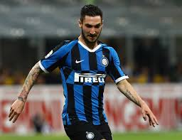
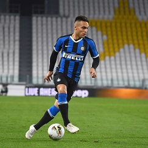

Football Club Internazionale Milano, commonly referred to as Internazionale or simply Inter, and known as Inter Milan outside Italy, is an Italian professional football club based in Milan, Lombardy. Inter is the only Italian club to have never been relegated from the top flight. Founded in 1908 following a schism within the Milan Cricket and Football Club (now A.C. Milan), Inter won its first championship in 1910. Since its formation, the club has won 30 domestic trophies, including 18 league titles, 7 Coppa Italia and 5 Supercoppa Italiana. From 2006 to 2010, the club won five successive league titles, equalling the all-time record at that time. They have won the Champions League three times: two back-to-back in 1964 and 1965 and then another in 2010. Their latest win completed an unprecedented Italian seasonal treble, with Inter winning the Coppa Italia and the Scudetto the same year.The club has also won three UEFA Cups, two Intercontinental Cups and one FIFA Club World Cup. Inter's home games are played at the San Siro stadium, which they share with local rivals A.C. Milan. The stadium is the largest in Italian football with a capacity of 80,018. Matches between A.C. Milan and Inter, known as the Derby della Madonnina, are one of the most followed derbies in football. As of 2019, Inter has the highest home game attendance in Italy and the sixth hightest attendance in Europe. The club is one of the most valuable in Italian and world football.
Marcelo Brozovic (born 16 November 1992) is a Croatian professional footballer who plays as a midfielder for Italian club Inter Milan. At international level, Brozovic plays for the Croatia national team. He represented his nation at the 2014 and 2018 editions of FIFA World Cup, and also at UEFA Euro 2016.
Lautaro Javier Mart�nez (born 22 August 1997) is an Argentine professional footballer who plays as a striker for Italian club Inter Milan and the Argentina national team. He began his football career in his native Argentina where he made his senior debut in 2015 with Racing Club. There he spent four seasons and represented the club in the league and Copa Libertadores, scoring 27 goals in 60 appearances before joining Inter in 2018. Mart�nez also previously represented Argentina at various youth levels and competed at the 2017 South American U-20 Championship and 2017 FIFA U-20 World Cup. He made his senior international debut in 2018, and represented the senior squad at the 2019 Copa Am�rica, helping his team to a third place finish in the competition.